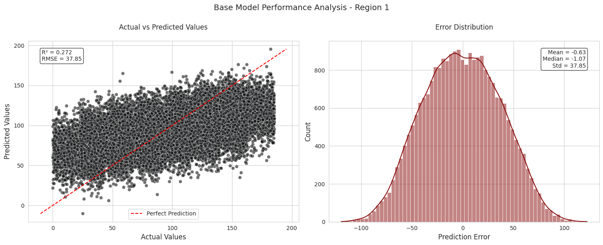
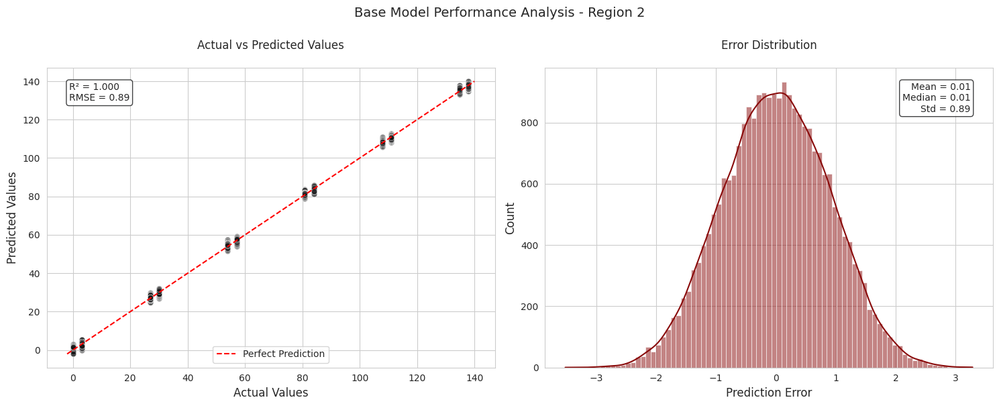
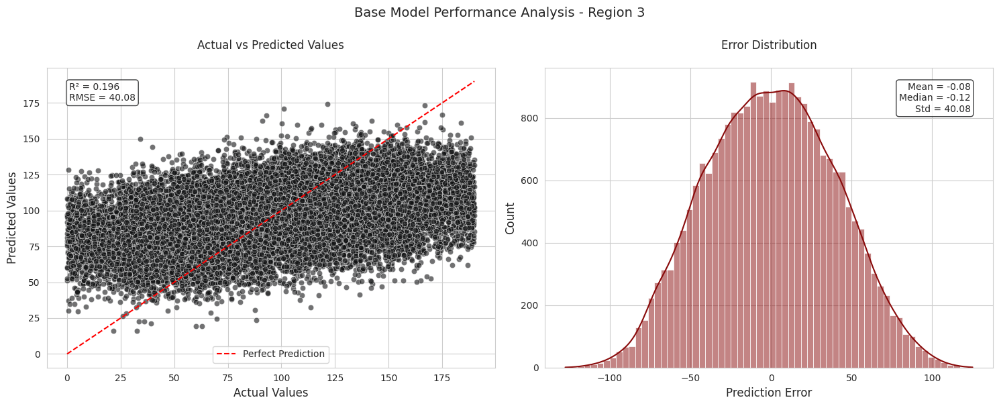

OilyGiant Mining Company - Simulated Regional Profit Analysis & Recommendations
Author
Umberto Fasci
Introduction
The primary goal of this project is to build a machine learning model capable of accurately predicting the volume of oil reserves for new wells in each region. This model will help select the top-performing oil wells based on predicted reserves and identify the region with the highest profit margin. The model’s output will guide the decision on where to drill, considering both profitability and financial risk.
For the purpose of understanding the main structure of the following analysis, I have taken a modular approach to each of the sections and subsections. Creating functions to perform the modeling, analysis all with defined output structure in order to further utilize the resulting information.
Library Import
import pandas as pdimport numpy as npimport matplotlib.pyplot as pltimport seaborn as snsfrom sklearn.model_selection import train_test_split, GridSearchCVfrom sklearn.linear_model import LinearRegressionfrom sklearn.metrics import mean_squared_error, r2_score
Data Ingest and Initial Exploration
Data Ingest and Duplicate Handling Code
file_paths = ["../datasets/geo_data_0.csv", "../datasets/geo_data_1.csv", "../datasets/geo_data_2.csv"]geodata = []duplicates_df = pd.DataFrame() # Create empty DataFrame for duplicatesfor path in file_paths:# Load the data data = pd.read_csv(path)# Find duplicates duplicates = data[data.duplicated(subset='id', keep=False)].copy() # Use copy() to avoid SettingWithCopyWarningifnot duplicates.empty:# Add a column to indicate which file the duplicates came from duplicates['source_file'] = path.split('/')[-1] duplicates_df = pd.concat([duplicates_df, duplicates], ignore_index=True)# Remove duplicates based on the 'id' column and add to the list geodata.append(data.drop_duplicates(subset='id'))# Sort duplicates_df by ID to group duplicates togetherduplicates_df = duplicates_df.sort_values(['id']).reset_index(drop=True)# Unpack the data into separate variables if neededgeo_data_0, geo_data_1, geo_data_2 = geodatadisplay(duplicates_df)
id
f0
f1
f2
product
source_file
0
5ltQ6
-3.435401
-12.296043
1.999796
57.085625
geo_data_1.csv
1
5ltQ6
18.213839
2.191999
3.993869
107.813044
geo_data_1.csv
2
74z30
1.084962
-0.312358
6.990771
127.643327
geo_data_0.csv
3
74z30
0.741456
0.459229
5.153109
140.771492
geo_data_0.csv
4
A5aEY
-0.039949
0.156872
0.209861
89.249364
geo_data_0.csv
5
A5aEY
-0.180335
0.935548
-2.094773
33.020205
geo_data_0.csv
6
AGS9W
-0.933795
0.116194
-3.655896
19.230453
geo_data_0.csv
7
AGS9W
1.454747
-0.479651
0.683380
126.370504
geo_data_0.csv
8
HZww2
0.755284
0.368511
1.863211
30.681774
geo_data_0.csv
9
HZww2
1.061194
-0.373969
10.430210
158.828695
geo_data_0.csv
10
KUPhW
0.231846
-1.698941
4.990775
11.716299
geo_data_2.csv
11
KUPhW
1.211150
3.176408
5.543540
132.831802
geo_data_2.csv
12
LHZR0
-8.989672
-4.286607
2.009139
57.085625
geo_data_1.csv
13
LHZR0
11.170835
-1.945066
3.002872
80.859783
geo_data_1.csv
14
QcMuo
0.506563
-0.323775
-2.215583
75.496502
geo_data_0.csv
15
QcMuo
0.635635
-0.473422
0.862670
64.578675
geo_data_0.csv
16
Tdehs
0.829407
0.298807
-0.049563
96.035308
geo_data_0.csv
17
Tdehs
0.112079
0.430296
3.218993
60.964018
geo_data_0.csv
18
TtcGQ
0.569276
-0.104876
6.440215
85.350186
geo_data_0.csv
19
TtcGQ
0.110711
1.022689
0.911381
101.318008
geo_data_0.csv
20
VF7Jo
2.122656
-0.858275
5.746001
181.716817
geo_data_2.csv
21
VF7Jo
-0.883115
0.560537
0.723601
136.233420
geo_data_2.csv
22
Vcm5J
-1.229484
-2.439204
1.222909
137.968290
geo_data_2.csv
23
Vcm5J
2.587702
1.986875
2.482245
92.327572
geo_data_2.csv
24
bfPNe
-6.202799
-4.820045
2.995107
84.038886
geo_data_1.csv
25
bfPNe
-9.494442
-5.463692
4.006042
110.992147
geo_data_1.csv
26
bsk9y
0.378429
0.005837
0.160827
160.637302
geo_data_0.csv
27
bsk9y
0.398908
-0.400253
10.122376
163.433078
geo_data_0.csv
28
bxg6G
-0.823752
0.546319
3.630479
93.007798
geo_data_0.csv
29
bxg6G
0.411645
0.856830
-3.653440
73.604260
geo_data_0.csv
30
fiKDv
0.157341
1.028359
5.585586
95.817889
geo_data_0.csv
31
fiKDv
0.049883
0.841313
6.394613
137.346586
geo_data_0.csv
32
wt4Uk
-9.091098
-8.109279
-0.002314
3.179103
geo_data_1.csv
33
wt4Uk
10.259972
-9.376355
4.994297
134.766305
geo_data_1.csv
34
xCHr8
1.633027
0.368135
-2.378367
6.120525
geo_data_2.csv
35
xCHr8
-0.847066
2.101796
5.597130
184.388641
geo_data_2.csv
All duplicates expressed throughout each of the datasets are only duplicated across the id subset. Looking closely none of the features or products throughout this duplicate range are duplicated themselves. This suggests that these are additional measuremets taken at the same well id.
In the end, in order to avoid any potential issues and considering the negligable amount of this data, these duplicated data were dropped.
Regions 1 and 3 show similar patterns and scales, suggesting they might have similar underlying characteristics. Region 2 stands out dramatically with its distinct spike pattern and much higher maximum counts. The x-axis (product) range is similar across all regions (0-175). The variance in distribution patterns suggests different operational or measurement approaches across regions
f0: Shows a multimodal distribution with several peaks, roughly symmetric but with clear separations between clusters
f1: Similar to f0, displays multimodal behavior with 3-4 distinct peaks and valleys
f2: Appears more unimodal and normally distributed, centered around 0-2 with some slight right skew
Region 2 Feature Distributions:
f0: Bimodal distribution with two prominent peaks, fairly symmetric around 0
f1: Single normal/Gaussian distribution, unimodal and symmetric
f2: Appears to be a discrete-looking distribution with regularly spaced spikes, though noted as continuous. This could indicate heavily quantized or binned data.
Region 3 Feature Distributions:
f0: Single peaked, normal distribution with slight asymmetry
f1: Normal distribution, very symmetric and unimodal
f2: Normal distribution with slight heavy tails, symmetric and unimodal
Base Model
def train_and_evaluate_region(data, region_name):# Separate features and target features = data[['f0', 'f1', 'f2']] target = data['product']# Split data into training and validation sets (75:25) features_train, features_val, target_train, target_val = train_test_split(features, target, test_size=0.25, random_state=12345)# Initialize and train model model = LinearRegression() model.fit(features_train, target_train)# Make predictions on validation set target_pred = model.predict(features_val)# Calculate metrics rmse = np.sqrt(mean_squared_error(target_val, target_pred)) r2 = r2_score(target_val, target_pred)# Save validation results validation_results = pd.DataFrame({'Actual': target_val,'Predicted': target_pred,'Error': target_val - target_pred })# Get feature coefficients feature_coefficients =dict(zip(features.columns, model.coef_)) model_params = {'param_fit_intercept': model.fit_intercept,'param_copy_X': model.copy_X,'param_positive': model.positive,'param_n_features_in': model.n_features_in_ }return {'region_name': region_name,'model': model,'rmse': rmse,'r2': r2,'avg_predicted': np.mean(target_pred),'avg_actual': np.mean(target_val),'validation_results': validation_results,'feature_coefficients': feature_coefficients,'intercept': model.intercept_,'parameters': model_params }
For the purposes of this analysis, Linear Regression is the chosen algorithm to model on the regional product target. Additionally, RMSE is utilized as the main metric to measure model performance.
Additional metrics are utilized in tendem to inform model performance.
Model parameters are collected and stored into the model_params dictionary in occordance to my own output structure workflow. Working with stored data in this fashion allows for much more versatility in future functionalities such as outputing a DataFrame showcasing the results of the model.
# Process all regionsregions_data = {'Region 1': geo_data_0,'Region 2': geo_data_1,'Region 3': geo_data_2}
Taking advantage of the dictionary structure in this case allows me to not only call upon this data when I need to but also take advantage of the keys for the output structure from each milestone in the analysis.
all_results = {} # Dictionary storage for model results and coefficientsmaster_results = [] # List to store rows for the result DataFramefor region_name, data in regions_data.items(): results = train_and_evaluate_region(data, region_name) all_results[region_name] = results# Append results for DataFrame master_results.append({'Region': region_name,'RMSE': results['rmse'],'R2 Score': results['r2'],'Avg Predicted Volume': results['avg_predicted'],'Avg Actual Volume': results['avg_actual'],**results['feature_coefficients'], # feature coefficients'Intercept': results['intercept'],**results['parameters'] # model params })
Base Model Results
# Create master result DataFramemaster_result_df = pd.DataFrame(master_results)display(master_result_df)
Region
RMSE
R2 Score
Avg Predicted Volume
Avg Actual Volume
f0
f1
f2
Intercept
param_fit_intercept
param_copy_X
param_positive
param_n_features_in
0
Region 1
37.853527
0.272392
92.789156
92.158205
3.781966
-13.892695
6.634141
77.637060
True
True
False
3
1
Region 2
0.892059
0.999622
69.178320
69.186044
-0.144811
-0.022002
26.950821
1.652857
True
True
False
3
2
Region 3
40.075851
0.195562
94.865725
94.785109
0.052104
-0.061638
5.772026
80.616568
True
True
False
3
Using the outputs from the structure designed in the previous functions allows me to display a decent looking DataFrame of the results for each of the regional models.
Additionally, I utilize the validation_results from the model runs to formulate the analytical plots describing the performance of the Linear Regression models.
Base Model Performance Analysis Graph Function
def plot_results(all_results):# Set the style for all plots sns.set_style("whitegrid")for region_name, results in all_results.items(): fig, (ax1, ax2) = plt.subplots(1, 2, figsize=(15, 6)) fig.suptitle(f'Base Model Performance Analysis - {region_name}', fontsize=14, y=1.00)# Actual vs Predicted Plot sns.scatterplot( data=results['validation_results'], x='Actual', y='Predicted', alpha=0.6, ax=ax1, color='#121314' )# Add diagonal line (representing perfect predictions) min_val =min(results['validation_results']['Actual'].min(), results['validation_results']['Predicted'].min()) max_val =max(results['validation_results']['Actual'].max(), results['validation_results']['Predicted'].max()) ax1.plot([min_val, max_val], [min_val, max_val], 'r--', label='Perfect Prediction')# Customize first plot ax1.set_xlabel('Actual Values', fontsize=12) ax1.set_ylabel('Predicted Values', fontsize=12) ax1.set_title('Actual vs Predicted Values', pad=20) ax1.legend(loc='lower center')# Add R^2 and RMSE annotations text =f'R² = {results["r2"]:.3f}\nRMSE = {results["rmse"]:.2f}' ax1.text(0.05, 0.95, text, transform=ax1.transAxes, verticalalignment='top', bbox=dict(boxstyle='round', facecolor='white', edgecolor='#121314', alpha=0.8))# Error Distribution Plot sns.histplot( data=results['validation_results'], x='Error', kde=True, ax=ax2, color='#890A0A' )# Error Distribution plot aes ax2.set_xlabel('Prediction Error', fontsize=12) ax2.set_ylabel('Count', fontsize=12) ax2.set_title('Error Distribution', pad=20)# Add mean and std annotations mean_error = results['validation_results']['Error'].mean() std_error = results['validation_results']['Error'].std() med_error = results['validation_results']['Error'].median() text =f'Mean = {mean_error:.2f}\nMedian = {med_error:.2f}\nStd = {std_error:.2f}' ax2.text(0.95, 0.95, text, transform=ax2.transAxes, horizontalalignment='right', verticalalignment='top', bbox=dict(boxstyle='round', facecolor='white', edgecolor='#121314', alpha=0.8)) plt.tight_layout() plt.show()plot_results(all_results)



Base Model Analysis
Region 2 shows excellent performance: - Very high R² (0.999) indicating the model explains nearly all variance in the data - Very low RMSE (0.89) showing high prediction accuracy - The scatter plot shows points tightly clustered along the perfect prediction line - Error distribution is narrow and normally distributed with small standard deviation - Predicted vs actual volumes are nearly identical (69.18 vs 69.19) - The highly quantized data exhibited by both the f2 feature and the target potentially hold strong influence on the results of this model.
Regions 1 and 3 show poor performance: - Low R² values (0.27 and 0.20 respectively) indicating the model explains very little of the variance - High RMSE values (37.85 and 40.08) showing large prediction errors - Scatter plots show wide dispersion from the perfect prediction line - Error distributions are much wider with larger standard deviations - While average predicted volumes are close to actuals, individual predictions vary greatly
Reviewing the assumptions made by Linear Regression modeling there is an assumption where the errors are normally distributed this is why I have decided to include these in the model performance analysis.
None means 1 unless in a parallel backend context. Not including 1 for n_jobs in param space.
def train_and_hypertune_region(data, region_name):# Separate features and target features = data[['f0', 'f1', 'f2']] target = data['product']# Split data into training and validation sets (75:25) features_train, features_val, target_train, target_val = train_test_split(features, target, test_size=0.25, random_state=12345)# Initialize and train model model = LinearRegression()# Hypertune with GridSearch grid_search = GridSearchCV(model, param_space, cv=5, scoring='neg_root_mean_squared_error') grid_search.fit(features_train, target_train) best_model = grid_search.best_estimator_# Make predictions on validation set target_pred = best_model.predict(features_val)# Calculate metrics rmse = np.sqrt(mean_squared_error(target_val, target_pred)) r2 = r2_score(target_val, target_pred)# Save validation results validation_results = pd.DataFrame({'Actual': target_val,'Predicted': target_pred,'Error': target_val - target_pred })# Get feature coefficients feature_coefficients =dict(zip(features.columns, best_model.coef_))# Get hyperparameters as a flattened dictionary hyperparams = {f'param_{key}': value for key, value in grid_search.best_params_.items()}return {'region_name': region_name,'model': best_model,'rmse': rmse,'r2': r2,'avg_predicted': np.mean(target_pred),'avg_actual': np.mean(target_val),'validation_results': validation_results,'feature_coefficients': feature_coefficients,'intercept': best_model.intercept_,'hyperparameters': hyperparams }
Using neg_root_mean_squared_error here for the grid search scoring parameter, this was implemented after addressing the documentation and investigating the scoring methods available.
hyper_results = {} # Dictionary storage for hypertuned model results and coefficientsmaster_hyper_results = [] # List to store rows for the master result DataFramefor region_name, data in regions_data.items(): results = train_and_hypertune_region(data, region_name) hyper_results[region_name] = results# Append results for master DataFrame master_hyper_results.append({'Region': region_name,'RMSE': results['rmse'],'R2 Score': results['r2'],'Avg Predicted Volume': results['avg_predicted'],'Avg Actual Volume': results['avg_actual'],**results['feature_coefficients'], # feature coefficients'Intercept': results['intercept'],**results['hyperparameters'] })
# Create master result DataFramemaster_hyper_result_df = pd.DataFrame(master_hyper_results)display(master_hyper_result_df)
Region
RMSE
R2 Score
Avg Predicted Volume
Avg Actual Volume
f0
f1
f2
Intercept
param_copy_X
param_fit_intercept
param_n_jobs
param_positive
0
Region 1
37.853527
0.272392
92.789156
92.158205
3.781966
-13.892695
6.634141
77.637060
True
True
5
False
1
Region 2
0.892059
0.999622
69.178320
69.186044
-0.144811
-0.022002
26.950821
1.652857
True
True
5
False
2
Region 3
40.075516
0.195576
94.866021
94.785109
0.051994
0.000000
5.772001
80.616838
True
True
5
True
Hypertuned Model Performance Analysis Graph Function
Region 2 has the highest model accuracy, with an RMSE of 0.892 and an R2 Score of 0.9996, suggesting almost perfect prediction.
Region 1 and Region 3 have higher RMSE values (37.85 and 40.08, respectively) and lower R2 scores, indicating weaker predictive accuracy in these regions.
The average predicted volumes are very close to the actual volumes across all regions.
It seems that even after model hypertuning, there is no change in the regional performance. Without any significant data transformations implimented, these are the best models avaiable.
Profit Calculations
Conditions:
When exploring the region, a study of 500 points is carried with picking the best 200 points for the profit calculation.
The budget for development of 200 oil wells is 100 USD million.
One barrel of raw materials brings 4.5 USD of revenue The revenue from one unit of product is 4,500 dollars (volume of reserves is in thousand barrels).
After the risk evaluation, keep only the regions with the risk of losses lower than 2.5%. From the ones that fit the criteria, the region with the highest average profit should be selected.
region_analysis = {}for region_name, results in hyper_results.items():# Get validation results from the previously trained models val_results = results['validation_results']# Calculate base profit using all validation data base_profit = calculate_profit( val_results['Actual'], val_results['Predicted'] )# Perform bootstrap analysis bootstrap_results = bootstrap_profit_analysis( val_results['Actual'], val_results['Predicted'] ) region_analysis[region_name] = {'base_profit': base_profit,'bootstrap_results': bootstrap_results }
region_analysis_results = []# Populate results for each regionfor region_name, analysis in region_analysis.items(): base_results = analysis['base_profit'] bootstrap_results = analysis['bootstrap_results'] region_analysis_results.append({'Region': region_name,'Base Profit ($M)': base_results['profit'] /1_000_000,'Average Volume (thousand barrels)': base_results['average_volume'],'Total Volume (thousand barrels)': base_results['total_volume'],'Mean Bootstrap Profit ($M)': bootstrap_results['mean_profit'] /1_000_000,'Profit Std Dev ($M)': bootstrap_results['std_profit'] /1_000_000,'Probability of Loss (%)': bootstrap_results['prob_loss'],'CI Lower Bound ($M)': bootstrap_results['confidence_interval'][0] /1_000_000,'CI Upper Bound ($M)': bootstrap_results['confidence_interval'][1] /1_000_000,'Mean Bootstrap Volume (thousand barrels)': bootstrap_results['mean_volume'],'Volume Std Dev (thousand barrels)': bootstrap_results['std_volume'] })# Create and display the DataFrameregion_analysis_df = pd.DataFrame(region_analysis_results)# Round numerical columnsnumeric_columns = region_analysis_df.select_dtypes(include=[np.number]).columnsregion_analysis_df[numeric_columns] = region_analysis_df[numeric_columns].round(2)# Sort by Mean Bootstrap Profitregion_analysis_df = region_analysis_df.sort_values('Mean Bootstrap Profit ($M)', ascending=False)# Display the DataFramedisplay(region_analysis_df)
Region
Base Profit ($M)
Average Volume (thousand barrels)
Total Volume (thousand barrels)
Mean Bootstrap Profit ($M)
Profit Std Dev ($M)
Probability of Loss (%)
CI Lower Bound ($M)
CI Upper Bound ($M)
Mean Bootstrap Volume (thousand barrels)
Volume Std Dev (thousand barrels)
1
Region 2
24.15
137.95
27589.08
4.78
2.05
1.2
0.90
8.67
23285.52
456.10
0
Region 1
33.65
148.50
29700.42
3.81
2.59
7.7
-1.43
8.91
23068.03
574.58
2
Region 3
25.12
139.02
27803.77
3.30
2.61
11.3
-1.89
8.38
22954.56
579.02
Region 1
Highest Base Profit: Region 1 has the highest base profit of $33.65 million, suggesting it is the most profitable under initial calculations.
Profit Variability: With a standard deviation of $2.59 million, this region has moderate profit variability, but a significant 7.7% probability of loss—higher than the other regions.
Profit Confidence Interval: Ranges from -$1.43 million to $8.91 million, suggesting possible but limited risk of loss.
Volume Statistics: The average volume per period is the highest at 148.50 thousand barrels, with a substantial total volume of 29,700.42 thousand barrels.
Region 2
Stable Profit Estimates: Region 2 has a base profit of $24.15 million and a relatively lower mean bootstrap profit at $4.78 million, with the lowest profit variability (std dev: $2.05 million).
Low Loss Probability: Only a 1.2% chance of incurring a loss, making it the least risky region.
Profit Confidence Interval: Between $0.90 million and $8.67 million, indicating positive expectations.
Consistent Volume: The mean bootstrap volume is 23,285.52 thousand barrels, with a low standard deviation of 456.10 thousand barrels, suggesting consistent output.
Region 3
Moderate Base Profit: Region 3 has a base profit of $25.12 million, close to Region 2 but with slightly higher risk.
High Loss Probability: A notable 11.3% probability of loss, the highest among the regions, indicating elevated financial risk.
Widest Confidence Interval: Ranges from -$1.89 million to $8.38 million, implying a significant chance of lower profit.
Volume Variability: Has a volume standard deviation of 579.02 thousand barrels, the highest among the regions, indicating greater variability in production.
Conclusion
According to the current analysis, the most profitable region with a good risk balance is Region 2, where profit is simulated being high while having the smallest confidence interval, and risk of loss as well. According to the hypertuned model and bootstraping simulation Region 1 and 3 where found to also have relativley decent bootstrapped profit however they do maintain a considerably high amount of loss risk.
Considering these results, the recommendation for Region 2 for continued and immediate production is a given. Further investigation and review on the measurement, efficiency and overall efficacy of production in Region 1 and 3 must be conducted to in order to finalize production decisions for those particular regions.